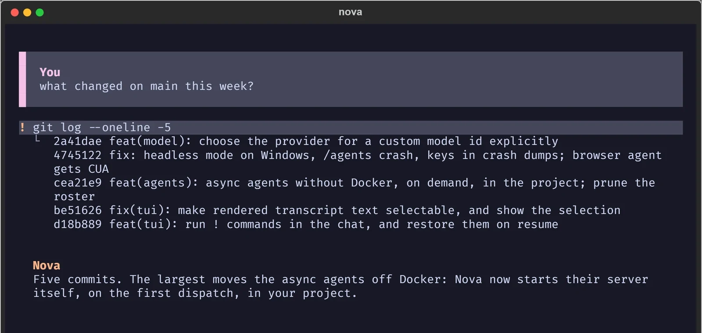

A coding agent that verifies its own work.
Nova is a terminal coding agent. It reads the repository, plans the change, edits the files, runs the tests, reads the failures, and retries. Generated code is not the finish line.
uv run nova
Python 3.11+. MIT licensed. Runs against your model, on your machine. No account, no telemetry, no service in the middle.

The claim
Code written is not the same as a task finished.
You describe the behaviour you want. Nova searches the repository, writes a plan you can read before a single file changes, edits real files, runs the project's own test command, and reads what broke.
Most agents stop at the first sentence of that list. Nova's last step is the one that matters: it checks the result, and it shows you the check.
If you add a feature, add its limit in the same breath. BRAND.md, the limit rule
So: grading runs one extra model call per turn, and it is off by default. The agent does not retrain the model. What it learns is written to disk as prompts, skills and thresholds you can read, edit, or delete.
Stop compacting on every image read
The loop
Read
Semantic search over the repository, not a grep. It finds the function that owns the behaviour.
Plan
A todo list you can read before a single file changes. You can stop it there.
Edit
Patches applied to real files, with a snapshot taken first so the change can be undone.
Test
The project's own command, in the project's own environment. Not a sandbox that guesses.
Read the failure
The traceback is parsed, not skimmed. The next edit is aimed at the line that broke.
Verify
A grader scores the result against five criteria. Off by default; one extra call when on.
Grading is a second opinion, not a second agent. It reads the diff and the test output and returns a score with a reason. When the score is low, the reason becomes the next attempt's context.
The controls
The reach
Headless
The same loop, no interface. For a cron job, a hook, or a script that needs a second pair of hands.
nova -p "fix the failing test"
Bridges
Discord and Telegram, with the same tools and the same policy. Ask from your phone, read the diff on your laptop.
The bridge is a transport, not a second agent. Nothing is re-implemented for chat.
Subagents
Independent work runs in parallel, each with its own context window. A review, a test run, and a dependency audit do not queue behind each other.
MCP servers are wired in the same way, with per-subagent grants.
The learning
Every turn is recorded: the plan, the tool calls, the diff, the test output. The record is the evidence.
A grader scores the result against the five criteria. One extra model call, off by default.
A failed grade becomes the next attempt's context. The retry is aimed at the reason, not at the whole task again.
What worked is written to disk as a prompt, a skill, or a threshold. Readable, editable, deletable.
What it does not do. It does not retrain the model. A candidate prompt replaces the current one only after enough runs, and every change is rollback-able. If you delete the folder, the agent is exactly as it shipped.
Install
git clone https://github.com/Babitdor/NovaCode.git
cd NovaCode && uv sync
uv run nova
uv resolves the environment and the lockfile. Nothing is installed globally.
python -m venv .venv
pip install -e .
nova
Python 3.11 or newer. The editable install keeps the source you cloned.
git clone https://github.com/Babitdor/NovaCode.git
cd NovaCode && uv run pytest tests/ --timeout=300
The suite is the same one the agent runs on itself. It takes about ten minutes cold.
Questions
Yes, for whichever model you point it at. Keys live in your operating system's keychain, not in a config file, and they are never written to a log.
Only to the model provider you configure. There is no Nova service in the middle and no telemetry. If you run a local model, nothing leaves the machine.
No. What it learns is written to disk as prompts, skills and thresholds. You can read every one of them, edit them, or delete the folder and get the agent back exactly as it shipped.
One extra model call per turn. It is off by default, and the page you are reading does not pretend otherwise.
Yes, with a policy you set. Every tool has a tier: auto, ask, or deny. Headless mode runs the same loop with no interface, and the policy still applies.
It reads the failure and retries. If it still fails, it says so and stops, with the evidence attached. A snapshot is taken before the first edit, so the turn is one command away from undone.
Install it and give it a real task.
Not a demo. The next thing on your list that you have been putting off because it needs a test run at the end.